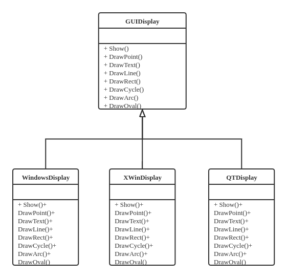
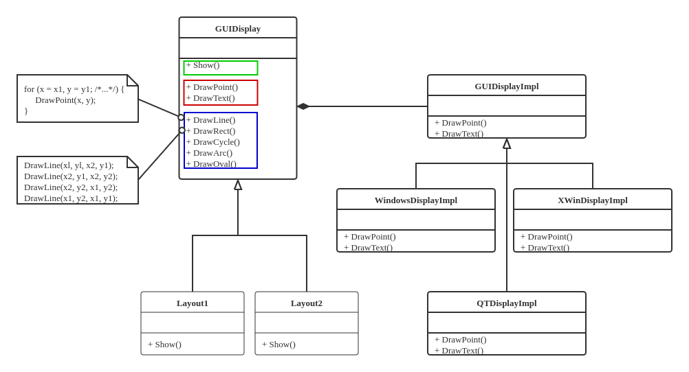

算法横向拆分 - 分离步骤
面向对象的接口设计要时刻遵循功能的 单一性 原则。
设计一个负载监视器
负载监视器
监视计算节点的敷在状态（如CPU占用率、存储器占用率、到某个特定节点的网络延迟）。
以CPU占用率的监视为例，不同条件下（例如不同种类不同版本的OS）获得CPU占用率的方法不同。
怎样在一个程序中实现对这些不同条件的适应呢？
自顶向下
主程序，Monitor的使用方法
int main(int argc, char* argv[]) {
WindowsDisplay display;
Monitor monitor(&display);
while (running()) {
monitor.GetLoad();
monitor.GetTotalMemory();
monitor.GetUsedMemory();
monitor.GetNetworkLantency();
monitor.show();
sleep(1000);
}
}
switch case - 对于不同的条件下实现Monitor::GetLoad函数
enum MonitorType { Win32, Win64, Ganglia };
MonitorType type = Ganglia;
float Monitor::GetLoad() {
switch (type) {
case Win32:
// Get system load via Win32 APIs
return load;
case Win64:
// Get system load via Win64 APIs
return load;
case Ganglia:
// Get system load via Ganglia interface
return load;
}
}
弊端：每增加一种新的系统环境，需要对Monitor::GetLoad函数做修改。
模板方法

class Monitor {
public:
virtual void GetLoad() = 0;
virtual void GetTotalMemory() = 0;
virtual void GetUsedMemory() = 0;
virtual void GetNetworkLatency() = 0;
Monitor(Display *display);
virtual ~Monitor();
void Show();
protected:
float load, latency;
long total_memory, used_memory;
Display* m_display;
};
void Monitor::Show() {
m_display->Show(load, total_memory, used_memory, latency);
}
这种实现的问题
如果几个函数接口的实现相互独立，分别有 N, M, K 种实现方法，那么，实现子类的个数将是 N \times M \times K种。
例如如果实现GetLoad()的方式有 4 种，实现 GetTotalMemory() 的方式有 3 种，那么子类的数量可以有 12 种。当代码需要维护的时候需要对重复的代码进行修改，费时费力。
接口分离与单一责任原则
两种不同层次的变化
对于上述实现，存在两种不同层面的变化，应该有所区分
-
在实现层面上：对于每个功能，存在多种实现方法
-
相对于基类是可变的，每种变化对应一个子类
-
这种变化表现在编译期，是一种相对静态的可变
-
-
在组织层面上：大“类”的功能由一系列子功能构成
-
子功能之间是相互独立的，应当将这些子功能拆分到不同的“小”类
-
组合是自由的、动态的、可变的、通过实现子功能的“小”类对象的组合来完成
-
这种变化表现在运行期，是一种相对动态的可变
-
-
隔离不同层面的“变”
-
静态的可变用 继承
-
动态的可变用 组合
-
单一责任
-
单一责任原则
-
类功能应该是 内聚 的，一个类只承担一项功能
-
表现为：修改/派生一个类只应该有一个理由，只能由单个变化因素引起
-
-
将多个不同功能交由同一个类实现，违反了单一责任原则
- 当一个功能需要变化时，不得不修改或者派生新的实现类
分离两种层次
-
剥离出新的接口
-
每个功能（算法）的实现定义为一个接口（称为 策略 ）
-
与接口不同的实现组成一个 策略类的体系
-
-
用组合替代继承
- 用功能（算法）接口之间的组合来实现功能（算法）之间的组合
如此一来，对于实现相互独立的函数接口分别有 N, M, K 种实现方法，需要实现的类的数量从 N \times M \times K 变为 N + M + K 个“小”类和 1 个大类。
重新看负责监视其的设计
-
剥离新的接口
-
由三个“策略”接口分别定义不同的功能
-
每个策略接口有一系列不同的实现
-
-
用组合替代继承
-
Monitor类中堡村一组“策略”接口类的实例 -
这些实例可以自由组合和动态替换
-
实现LoadStrategy“小类”
class LoadStrategy {
public:
virtual float GetLoad() = 0;
};
class LoadStrategyImpl1 : public LoadStrategy {
public:
float GetLoad() {
// Get load here...
return load;
}
};
class LoadStrategyImpl2 : public LoadStrategy {
public:
float GetLoad() {
// Get load here...
return load;
}
};
实现Monitor类
class Monitor {
public:
Monitor(LoadStrategy *load_strategy, MemoryStrategy *memory_strategy,
LatencyStrategy *latency_strategy, Display *display);
void GetLoad();
void GetTotalMemory();
void GetUsedMemory();
void GetNetworkLatency();
void Show();
private:
LoadStraegy *load_strategy_;
MemoryStrategy *memory_strategy_;
LatencyStrategy *latency_strategy_;
float load, latency;
long total_memory, used_memory;
Display *display_;
};
Monitor::Monitor(LoadStrategy *load_strategy, MemoryStrategy *memory_strategy,
LatencyStrategy *latency_strategy, Display *display)
: load_strategy_(load_strategy),
memory_strategy_(memory_strategy),
latency_strategy_(latency_strategy),
display_(display),
load(0.0),
latency(0.0),
total_memory(0),
used_memory(0) {}
void Monitor::Show() {
display->Show(load, total_memory, used_memory, latency);
}
主函数实现
int main(int argc, char *argv[]) {
GangliaLoadStrategy load_strategy;
WinMemoryStrategy memory_strategy;
PingLatencyStrategy latency_strategy;
WindowDisplay display;
Monitor monitor(&load_strategy, &memory_strategy, &latency_strategy, &display);
while (running()) {
monitor.GetLoad();
monitor.GetTotalMemory();
monitor.GetUsedMemory();
monitor.GetNetworkLatency();
monitor.Show();
sleep(1000);
}
}
这样的实现还具备运行期的 灵活性 ，可以使用新的策略类替换原始的策略类。
class Monitor {
public:
// ,,,
void SetLoadStrategy(LoadStrategy *load_strategy);
void SetMemoryStrategy(MemoryStrategy *memory_strategy);
void SetLatencyStrategy(LoadStrategy *latency_strategy);
};
int main(int argc, char *argv[]) {
//...
LoadStrategyImpl2 new_load_strategy;
monitor.SetLoadStrategy(&new_load_strategy);
monitor.GetLoad();
//...
}
委托与接口的进一步分解
接着负载监视器的设计，接下来实现结果显示部分
回顾之前设计中留下的Monitor::Show()接口
class Monitor {
public:
//...
void Show();
protected:
float load, latency;
long total_memory, used_memory;
Display* display_;
};
void Monitor::Show() {
display_->Show(load, total_memory, used_memory, latency);
}
这里Monitor::Show调用的是Display display_这个成员的Show方法，而Display::Show又根据环境调用相应子类的Show方法。
Monitor有一个“显示”的任务，但它本身没有实现而是交给Display display_这个成员实现。这是一种 委托 模式
- Delegation, Wrapper, Helper 一般都指的是 委托 模式
深入Display
“显示”分成两类：Console和GUI，GUI更加美观、常用。
GUI有多种不同的实现（Windows, X-Win, QT, ...），来实现多个不同的GUIDisplay

同时，我们又希望显示是多样化的，如不同的颜色、形状；柱状图、折线图、饼图

问题
对于GUIDisplay的各个子类，大量重复代码（代码冗余，维护难度加大）
分析：变与不变
| 不变 | 变 |
|---|---|
| 任何绘图基础都是画点，画法一样 | 不同GUI，实现画点的API接口不同 |
把变与不变分离，抽象出新的接口
分离新的接口
将GUIDisplay中的函数分成三类

其中
-
第一类是其对外暴露的接口
-
第二类是需要调用特定平台API的函数
-
第三类函数基于第二类函数实现
于是可以讲三类函数分离开来，在不同层面体现其可变性。
分离不同层面的可变性
“显示”部分包含两个层面的变化：
-
调用不同平台API实现相同的基础功能
-
结果采用命令行显示还是GUI显示

- Bridge模式 - 把抽象部分和实现部分分离，是它们可以独立变化。
实现
class Display {
public:
virtual void Show(float load, long total_memory, long used_memory,
float latency) = 0;
virtual ~Display() {}
};
class ConsoleDisplay : public Display {
public:
void Show(float load, long total_memory, long used_memory, float latency) {
cout << "load = " << load << endl;
cout << "total_memory = " << total_memory << endl;
cout << "used_memory = " << used_memory << endl;
cout << "latency = " << latency << endl;
}
};
新的接口
class GUIDisplay : public Display {
public:
virtual void Show(float load, long total_memory, long used_memory,
float latency) = 0;
GUIDisplay(GUIDisplayImpl* impl) : impl_(impl) {}
~GUIDisplay();
GUIDisplay(const GUIDisplay& d);
GUIDisplay& operator=(const GUIDisplay& d);
protected:
void DrawLine(int x1, int y1, int x2, int y2);
void DrawRect(int x1, int y1, int x2, int y2);
//...
private:
void DrawPoint(int x, int y);
void DrawText(int x, int y, string text);
GUIDisplayImpl* impl_;
};
将GUIDisplay类的DrawPoint和DrawText 委托 给GUIDisplayImpl类（将基础类中与环境相关的功能交给和环境相关的类去实现）。
GUIDisplayImpl的实现：
class GUIDisplayImpl {
public:
GUIDisplayImpl() : use(1) {} // 注意这里引用计数的使用
virtual void DrawPoint(int x, int y) = 0;
virtual void DrawText(int x, int y, string text) = 0;
private:
int use;
friend class GUIDisplay;
};
void GUIDisplay::DrawPoint(int x, int y) {
impl_->DrawPoint(x, y);
}
void GUIDisplay::DrawText(int x, int y, string text) {
impl_->DrawText(x, y, text);
}
GUIDisplay声明成GUIDisplayImpl的友元是 引用计数 的需要。
实现新的接口
WindowsDisplayImpl
class WindowsDisplayImpl : public GUIDisplayImpl {
public:
WindowsDisplayImpl() { /* init it here. */ }
~WindowsDisplayImpl();
void DrawPoint(int x, int y);
void DrawText(int x, int y, string text);
};
void WindowsDisplayImpl::DrawPoint(int x, int y) {
SetPixel(hdc, x, y, forColor);
}
void WindowsDisplayImpl::DrawText(int x, int y, string text) {
TextOut(hdc, x, y, text.c_str(), text.size());
}
XWinDisplayImpl
class XWinDisplayImpl : public GUIDisplayImpl {
public:
XWinDisplayImpl() { /* init it here. */ }
~XWinDisplayImpl() {}
void DrawPoint(int x, int y);
void DrawText(int x, int y, string text);
};
void XWinDisplayImpl::DrawPoint(int x, int y) {
XDrawPoint(display, win, gc, x, y);
}
void XWinDisplayImpl::DrawText(int x, int y, string text) {
XDrawString(display, win, gc, x, y, text, text.size());
}
不变的部分
对于那些基于DrawPoint和DrawText实现的函数，在GUIDisplay中直接实现即可。
void GUIDisplay::DrawLine(int x1, int y1, int x2, int y2) {
for (int x = x1; x < x2; x++) {
int y = x1 + (x - x1) * (y2 - y1) / (x2 - x1);
DrawPoint(x, y);
}
}
void GUIDisplay::DrawRect(int x1, int y1, int x2, int y2) {
DrawLine(x1, y1, x2, y2);
DrawLine(x2, y1, x2, y2);
DrawLine(x2, y2, x1, y2);
DrawLine(x1, y2, x1, y1);
}
另一个层面的可变部分
对于Show函数，其多样性体现在显示数据的方式（折线图或柱状图或二者的组合）
这一部分可以留给GUIDisplay定义虚函数的实现
使用继承实现GUIDisplay —— 画一个方框显示CPU负载：
class Layout1 : public GUIDisplay {
public:
Layout1(GUIDisplayImpl* impl) : GUIDisplay(impl) {}
void Show(float load, long total_memory, long used_memory, float latency);
};
void Layout1::Show(float load, long tota_memory, long used_memory,
float latency) {
DrawRect(10, 10, 300, 20);
DrawText(10, 10, float2str(load));
//......
}
实现不同的Layout —— 画一个方框，其中画一个横向柱状图：
class Layout2 : public GUIDisplay {
public:
Layout2(GUIDisplayImpl* impl) : GUIDisplay(impl) {}
void Show(float load, long total_momery, long used_momery, float latency);
};
void Layout2::Show(float load, long total_memory, long used_memory,
float latency) {
DrawRect(10, 10, 30, 300);
int miny = load * 290 / 100 + 10;
for (int y = 300; y > miny; y -= 3) DrawLine(10, y, 30, y);
//...
}
总结：
-
使用不同的
Layout指针可以显示不同的汇报风格； -
当需要改变环境的时候，只需改变
GUIDisplayImpl—— Bridge模式 ，即可适应不用的系统环境。